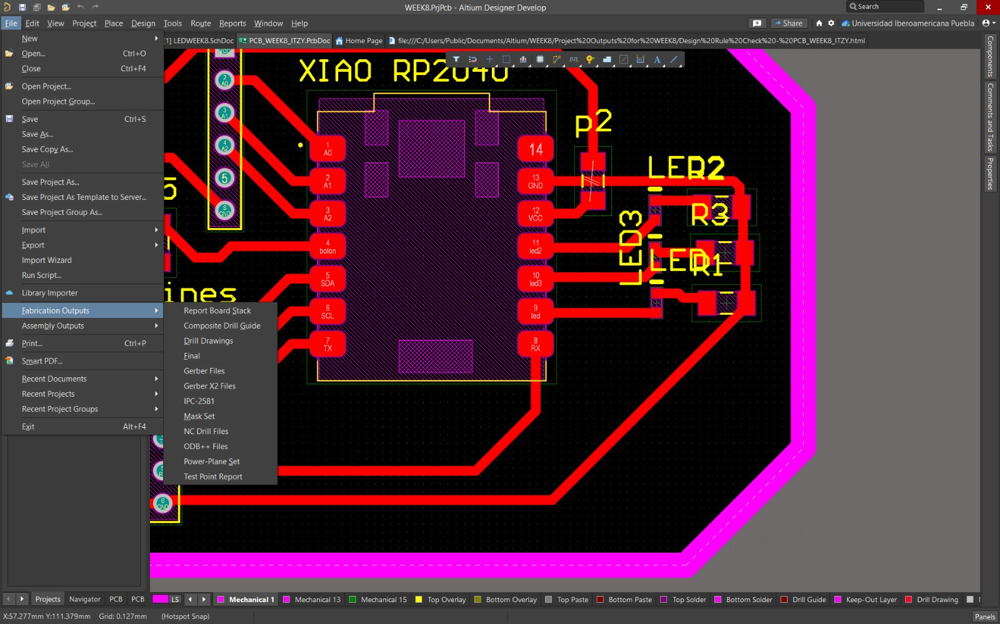
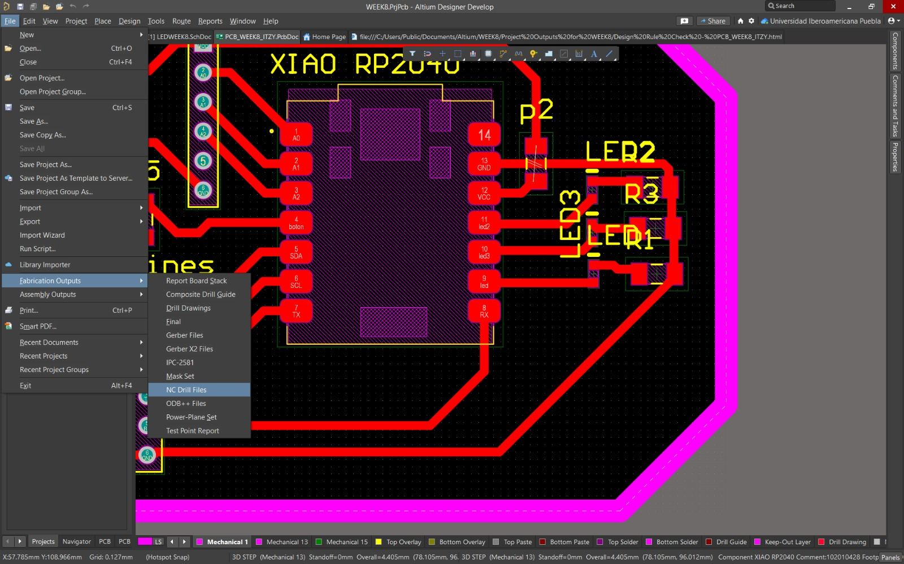
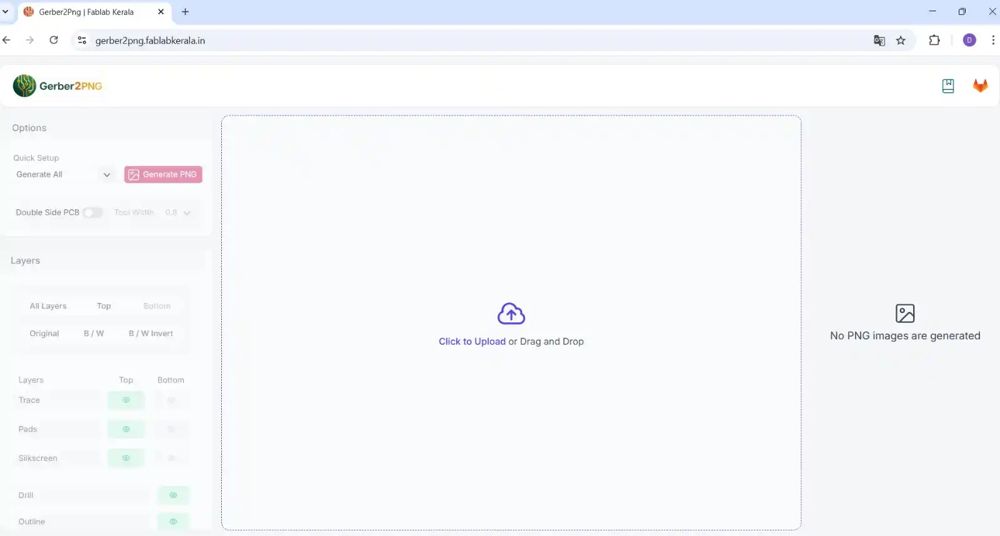
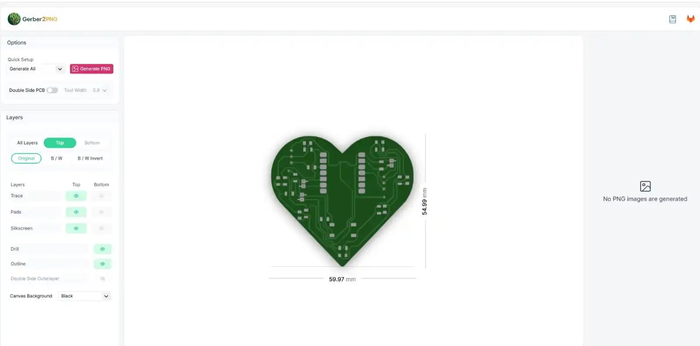
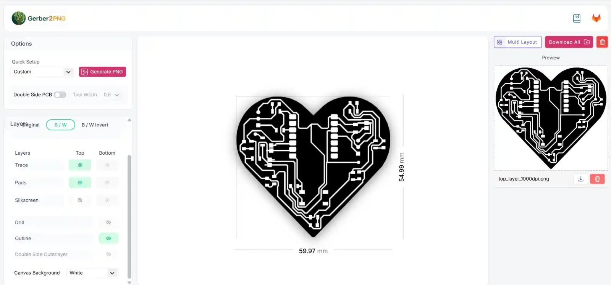
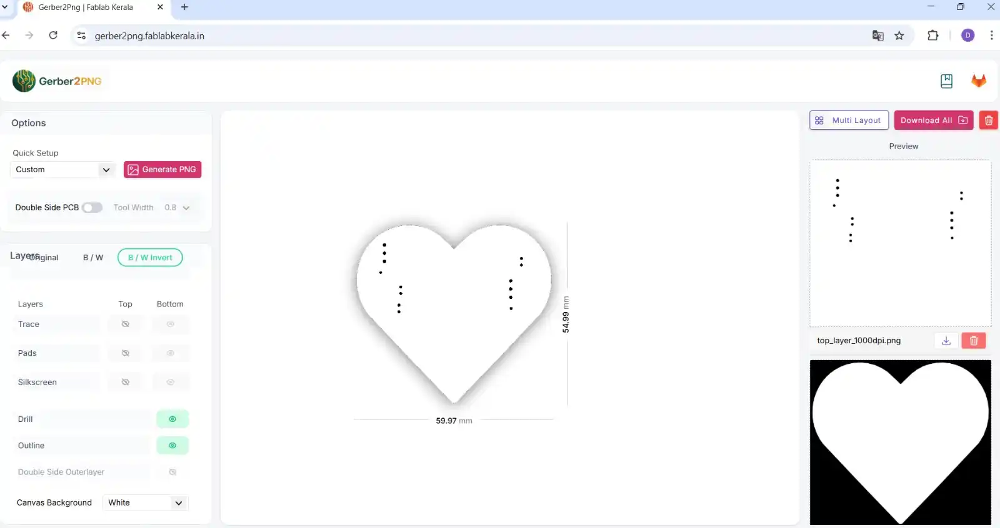
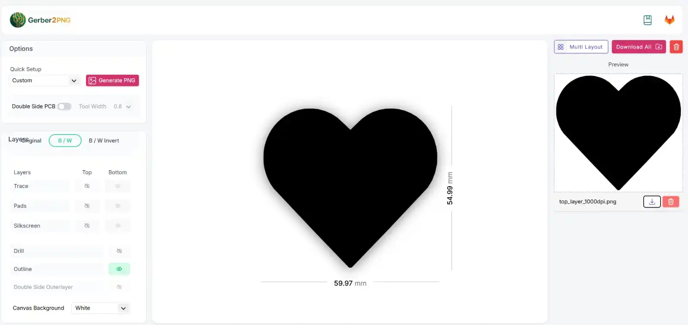

Fresado de PCBs con la Roland SRM-20 (Modela)
Guía para fabricar tu primera placa de circuito impreso (PCB) desde cero. Está pensada para quien nunca ha usado una fresadora CNC ni ha fabricado una placa. Sigue los pasos en orden; cada uno depende del anterior.
Qué es la SRM-20 y qué vas a hacer
La SRM-20 es una fresadora CNC de escritorio de Roland (línea Modela). No "imprime" la placa: la talla. Sobre una lámina cubierta de cobre, una fresa giratoria retira el cobre sobrante y deja únicamente las pistas que conducen la electricidad. Con esa misma máquina haces las perforaciones y, al final, recortas el contorno de la placa.
El recorrido completo es: diseño terminado → archivos de fabricación → preparación de la máquina → fresado → soldadura → prueba.
Vocabulario mínimo
- PCB: la placa de circuito impreso, el soporte físico donde van soldados los componentes.
- Fresa (bit): la herramienta de corte que gira y retira el cobre. Usarás tres distintas.
- Pista (trace): cada "camino" de cobre que conecta dos puntos del circuito.
- Cama de sacrificio: una tabla de MDF que va debajo de tu placa. Protege la mesa de la máquina cuando la fresa atraviesa el material.
- Gerber: el formato estándar en el que se exporta un diseño de PCB. Contiene la información capa por capa.
- Origen (X, Y, Z): el punto cero desde el que la máquina empieza a contar. Tú lo defines.
Lo que necesitas a la mano
- Computadora con el programa VPanel for SRM-20 instalado y la máquina conectada por USB. Pidelo a tu coordinador.
- Placa de cobre (fenólica de una cara, o fibra de vidrio tipo FR1/FR4).
- Cama de sacrificio de MDF.
- Cinta doble cara.
- Las tres fresas: perforación, grabado de pistas y contorno.
- Llave Allen para sujetar la fresa y la llave que fija la cama a la máquina.
- Aspiradora pequeña para el polvo de cobre.
- Tu diseño exportado a Gerber.
Paso 1. Exportar los archivos Gerber
Antes de tocar la máquina necesitas convertir tu diseño en archivos de fabricación. El procedimiento cambia un poco según el programa donde diseñaste.
- Abre el archivo
.PcbDoc. - Ve a File → Fabrication Outputs → Gerber Files. En la ventana, selecciona las capas que usaste (cobre, silkscreen, máscara de soldadura y, en Mechanical Layers, la capa donde definiste el borde de la placa). Acepta.

- Para las perforaciones: File → Fabrication Outputs → NC Drill Files. Si no sabes qué cambiar, deja la configuración por defecto y acepta.

- Altium genera una carpeta
Project Outputscon los archivos Gerber y de perforación.
- Abre el editor de PCB.
- Ve a File → Fabrication Outputs → Gerber Files, revisa las capas y da clic en Plot.
- Si tu diseño lleva perforaciones, genera también el archivo de taladros desde el mismo menú.
- KiCad deja todos los archivos en la carpeta de salida que le indiques.
Al terminar tendrás una carpeta con varios archivos Gerber (uno por capa) y, si aplica, el de perforaciones.
Paso 2. Convertir los Gerber a imágenes PNG
La SRM-20 trabaja a partir de imágenes en blanco y negro, no de Gerber directamente.
- Entra a gerber2png (
https://gerber2png.fablabkerala.in/). - En click to upload, sube todos los archivos de la carpeta de salida.

- La página detecta las capas disponibles (por ejemplo Top Trace, Top Drill, Top Cut) y genera una imagen para cada una.

- Descarga las tres imágenes que vas a usar:
- Pistas: activa las opciones de trazo (trace) con fondo blanco.

- Perforaciones: activa Drill con inversión de blanco y negro (B/W Invert), fondo blanco.

- Contorno: activa Outline con inversión de blanco y negro, fondo negro.

- Pistas: activa las opciones de trazo (trace) con fondo blanco.
Guarda los tres PNG identificados con claridad (pistas, perforaciones, contorno). Los vas a cargar uno por uno en el siguiente paso.
Paso 3. Generar las trayectorias de corte en Mods
Mods es la herramienta web que traduce tus imágenes en las instrucciones que entiende la máquina.
- Entra a
modsproject.org. Busca la sección SRM-20 mill y elige mill 2D PCB. - Da clic en select png file y carga la imagen de pistas.
- En Set PCB defaults elige el preajuste correcto para cada proceso. Los nombres habituales son:
- 1/64 (flat) para grabar las pistas.
- 1/32 (drill) para las perforaciones.
- 1/32 (outline) para recortar el contorno.
- En el bloque de la SRM-20, fija el origen X, Y y Z en 0 (los tres). Esto es importante: si no quedan en cero, la máquina cortará en el lugar equivocado.
- Ajusta la velocidad según la operación:
- Pistas: 4
- Perforaciones: 0.2
- Contorno: 2
- Da clic en calculate. Mods te muestra una simulación del recorrido de la fresa; revísala.
- Activa la opción de output / files para que se descargue el archivo de trayectorias.
Repite el proceso tres veces, una por cada imagen (pistas, perforaciones y contorno), cambiando el preajuste y la velocidad correspondientes. Al final tendrás tres archivos de corte.
Paso 4. Preparar el material y la máquina
- Pega cinta doble cara sobre la cama de sacrificio de MDF y fija encima la placa de cobre. Presiona bien: debe quedar completamente plana y sin moverse. Una placa que se despega arruina el trabajo y puede romper la fresa.
- Coloca la cama de sacrificio dentro de la máquina y atorníllala. Verifica que quede firme y alineada.
- Abre VPanel for SRM-20 con la máquina conectada por USB. Confirma que el programa reconoce la conexión antes de seguir.
Paso 5. Instalar la primera fresa
El orden de fresado es perforaciones, luego pistas y al final contorno, así que empiezas con la fresa de perforación.
- Con los controles X/Y de VPanel, mueve el cabezal a una zona despejada para trabajar cómodo.
- Afloja el tornillo del husillo con la llave Allen e inserta la fresa de perforación. Sujétala a una altura media.
- Aprieta bien el tornillo (en sentido de las manecillas del reloj). Si la fresa resbala durante el corte, el resultado se echa a perder.
Maneja las fresas con cuidado: son frágiles y filosas. Tómalas por el cuerpo grueso, nunca por la punta.
Paso 6. Fijar los orígenes X, Y y Z
Aquí defines el punto cero desde el que la máquina empezará a cortar.
- Origen X/Y: con los controles de VPanel, mueve el cabezal hasta la esquina inferior izquierda de tu placa. Ese será tu punto de referencia. Ajusta la velocidad de paso en Cursor Setup si necesitas movimientos más finos. Cuando estés en la esquina, en Set Origin Point da clic en X/Y.
- Origen Z: baja la fresa muy despacio, usando pasos pequeños (x1 y luego x0.1), hasta que la punta apenas roce el cobre. Es la parte más delicada: si bajas de golpe, rompes o desafilas la fresa. Cuando la punta toque la superficie lo justo, fija el cero dando clic en Z dentro de Set Origin Point.
Paso 7. Fresar
- En VPanel, ve a CUT → ADD, selecciona tu archivo de perforaciones y da clic en OUTPUT. El husillo empieza a girar y la máquina ejecuta el corte.
- Quédate cerca y vigila todo el proceso. Mantén VPanel abierto y, si algo se ve mal (la fresa corta demasiado profundo o la placa se mueve), usa Pause de inmediato.
- Cuando termine, aspira el polvo de cobre para ver bien el resultado. No soples el polvo: se mete en los rieles de la máquina.
Paso 8. Cambiar de fresa entre etapas
Después de las perforaciones repites el corte con las pistas y luego con el contorno. Cada cambio de fresa exige una regla que no debes olvidar:
- Mueve el cabezal si lo necesitas, pero no vuelvas a fijar el origen X/Y. Si lo haces, las pistas no coincidirán con las perforaciones.
- Instala la nueva fresa (pistas primero, contorno al final) y aprieta bien.
- Vuelve a fijar solo el origen Z, porque cada fresa tiene una longitud distinta. Repite el procedimiento del Paso 6 únicamente para Z.
- Carga el nuevo archivo con CUT → Delete All → ADD → selecciona el archivo → OUTPUT.
Sigue siempre el orden: perforaciones → pistas → contorno. El contorno va al último porque, una vez recortada, la placa queda suelta.
Paso 9. Retirar y limpiar
- Cuando termine el contorno, aspira de nuevo el polvo.
- Desatornilla la cama de sacrificio y despega la placa con cuidado.
- Limpia y guarda las fresas en su lugar. Deja el área de trabajo limpia para quien siga.
Paso 10. Soldar los componentes
No hay una única técnica correcta, pero conviene ir de los componentes más pequeños a los más grandes para no estorbarte con los ya colocados.
- Organiza tus componentes SMD antes de empezar.
- Calienta el cautín a unos 270 °C. El rango habitual llega hasta cerca de 300 °C; si es tu primera vez, una temperatura un poco más baja te da margen. Aplica un poco de flux para que la soldadura fluya mejor.
- Pon una gota de estaño en un solo pad y, mientras está caliente, coloca el componente con pinzas para anclarlo.
- Suelda el resto de sus terminales con el hilo de estaño, verificando que el componente quede bien alineado.
- Repite con todos: primero resistencias y LEDs, después el microcontrolador, el botón y los headers de pines.
- Al terminar, revisa con un multímetro que no haya continuidad entre pistas que deberían estar separadas (cortos), y que sí haya continuidad donde corresponde.
Paso 11. Programar y probar
El detalle depende de tu microcontrolador. Como ejemplo, para una placa con XIAO RP2040 / RP2350:
- Conecta la placa a la computadora con un cable USB-C.
- Instala Arduino IDE. Ve a File → Preferences → Additional Boards Manager URLs y pega:
https://github.com/earlephilhower/arduino-pico/releases/download/global/package_rp2040_index.json - En Boards Manager, busca Raspberry Pi Pico/RP2040/RP2350 e instálalo.
- En Tools → Board, selecciona tu placa; en Tools → Port, elige el puerto correcto.
- Sube un código sencillo (por ejemplo, encender un LED) para confirmar que la placa responde antes de probar tu programa completo.
Si algo no funciona
- Un LED no enciende: revisa con el multímetro la polaridad del LED y la junta de soldadura. Es común que el LED quede invertido o que el estaño no haga buen contacto. Vuelve a soldarlo con la orientación correcta.
- Varios componentes no responden: revisa el código. Suele faltar declarar bien los pines al inicio del programa.
- Las pistas salieron incompletas o con rebabas: casi siempre es origen Z mal fijado (muy alto deja cobre, muy bajo corta de más) o la placa no quedó plana. Repite la calibración de Z.
- El segundo corte no coincide con el primero: reiniciaste el origen X/Y por error entre fresas. Solo se reinicia Z.
Resumen del orden que nunca cambia
- Exportar Gerber.
- Gerber a PNG (pistas, perforaciones, contorno).
- Generar trayectorias en Mods (origen 0; velocidades 4 / 0.2 / 2).
- Montar placa y cama de sacrificio.
- Fijar X/Y una sola vez, y Z cada vez que cambies de fresa.
- Fresar: perforaciones → pistas → contorno.
- Limpiar, soldar y probar.